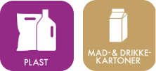
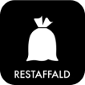
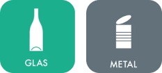
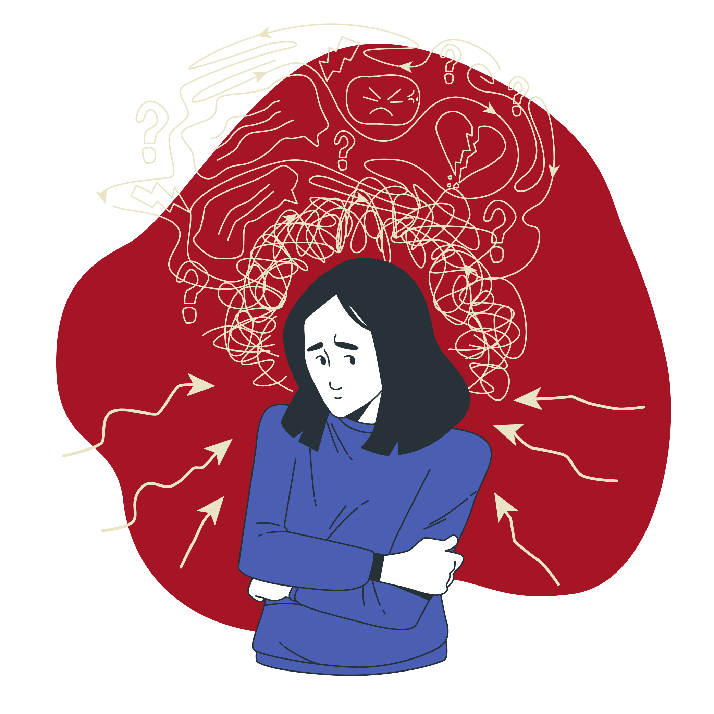

Vær opmærksom på mærkaterne
Madaffald
- For gammel mad
- Kaffegrums
- Æggeskaller
- Mindre knogler og ben
- Blomsterbuketter

Plast, mad- og drikkekartoner
- Plastbakker, -flasker og -bøtter
- Plastposer
- Plastfolier
- Bobleplast
- Mælkekartoner
- Yoghurtkartoner
- Juicekartoner
- Madkartoner
Papir, pap og tekstilaffald
- Aviser
- Reklamer
- Kontorpapir og kuverter
- Papirposer
- Papæsker
- Papkasser
- Paprør
- Æggebakker

Restaffald
- Pizzabakker
- Aske og cigaretskod
- Hygiejneaffald
- Chips- og kaffeposer
- Tomme tuber
- Støvsugerposer
- Gavepapir

Farligt affald
- Spraydåser
- Kemikalieflasker
- Malingrester
- Småt elektronik
- Lyspærer
- Batterier

Glas og metal
- Glasflasker uden pant
- Konservesglas
- Drikkeglas
- Vitaminglas
- Konservesdåser
- Metallåg
- Foliebakker
- Drikkedåser uden pant

Føler du dig overvældet? Bare rolig, det er okay, hvis du laver fejl.
- Begynd med 4 forskellige kasser
- Sæt mærkater på de specifikke affaldstyper
- Vask glasflasker og madbeholdere, før du smider dem ud
- Hvis du ikke har plads til fire kasser, kan du bruge en pose og samle forskellige typer affald der: papir, mad- og drikkebeholdere, plast, metal og glas.
- Når du går ud med skraldet, sortér det i specifikke containere, når du er der.